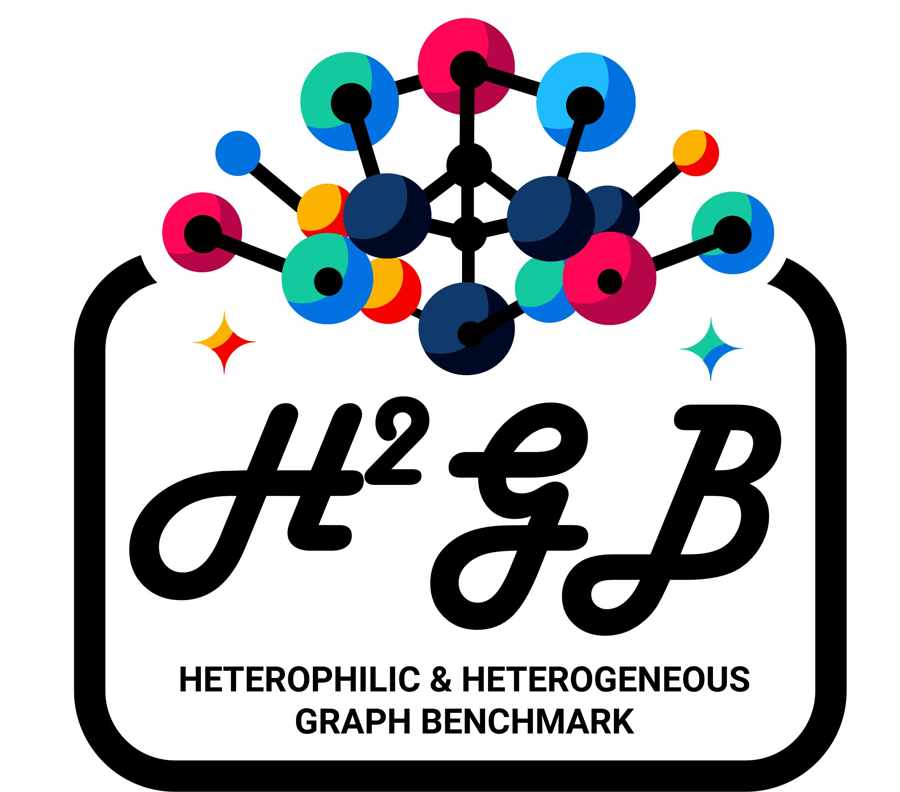

Install ℋ²GB
Installation
Get Started
Introduction by Example
Package Reference
H2GB.datasets
H2GB.sampler
H2GB.encoder
H²GB
H2GB
Index
Index
C
|
D
|
G
|
H
|
I
|
M
|
N
|
O
|
P
|
R
|
T
C
ComplExNodeEncoder (class in H2GB.encoder)
D
DistMultNodeEncoder (class in H2GB.encoder)
G
get_GOATLoader() (sampler method)
get_GrashSAINTRandomWalkLoader() (sampler method)
get_HGTloader() (sampler method)
get_HINormerLoader() (sampler method)
get_LINKXLoader() (sampler method)
get_NAGloader() (sampler method)
get_NeighborLoader() (sampler method)
H
HeteroLabelNodeEncoder (class in H2GB.encoder)
HeteroPENodeEncoder (class in H2GB.encoder)
HeteroRawEdgeEncoder (class in H2GB.encoder)
HeteroRawNodeEncoder (class in H2GB.encoder)
I
IeeeCisDataset (class in H2GB.datasets)
M
MAGDataset (class in H2GB.datasets)
MetapathNodeEncoder (class in H2GB.encoder)
N
Node2VecNodeEncoder (class in H2GB.encoder)
O
OAGDataset (class in H2GB.datasets)
P
PDNSDataset (class in H2GB.datasets)
PokecDataset (class in H2GB.datasets)
R
RawEdgeEncoder (class in H2GB.encoder)
RawNodeEncoder (class in H2GB.encoder)
RCDDDataset (class in H2GB.datasets)
T
TransENodeEncoder (class in H2GB.encoder)